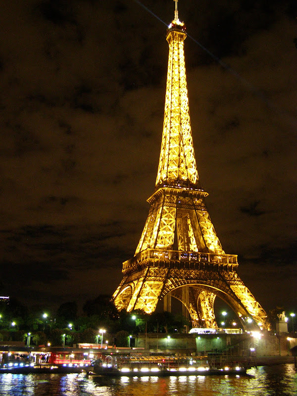
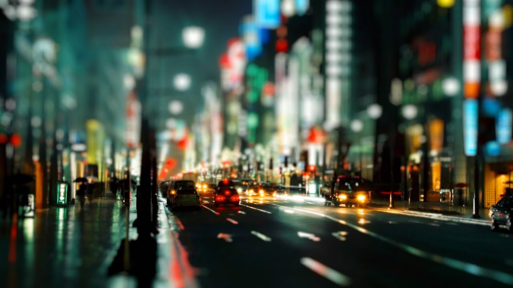

Предзаказ
Пари́ж (фр. Paris [paˈʁi] Информация о файле слушать) — столица и крупнейший город Франции. Находится на севере государства, в центральной части Парижского бассейна, на реке Сена. Население 2,2 млн человек (2016)[3]. Центр агломерации Большой Париж (6,6 млн), являющийся ядром исторического региона Иль-де-Франс (более 12 млн)[4]. Образует коммуну и департамент, разделённый на 20 округов.
Относится к глобальным городам и мировым финансовым центрам. Здесь располагаются штаб-квартиры ЮНЕСКО и других международных организаций.
Исторический центр, образованный островом Сите и обоими берегами Сены, складывался на протяжении веков. Во второй половине XIX века претерпел коренную реконструкцию. В пригороде расположен дворцово-парковый ансамбль Версаль.
Основан в III веке до н. э. кельтским племенем паризиев. С III—IV веков известен как галло-римский город Паризии. С конца X века с перерывами является столицей Франции. :
Дата: 06.01.23
Париж вырос на месте поселения Лютеция, основанного кельтским племенем паризиев в III веке до н. э. Поселение располагалось на безопасном острове Сите, окружённом водами реки Сены. В начале II века до н. э. поселение было обнесено крепостной стеной. Основой экономики была торговля: Сена связывала Средиземное море с Британскими островами. В 52 году до н. э. паризии присоединились к восстанию галлов против господства Рима под предводительством арвернского вождя Верцинге́торига. В том же году состоялась битва при Лютеции, в которой римляне одержали победу. К этому времени относятся сочинения Юлия Цезаря «Записки о Галльской войне», в которых была впервые упомянута Лютеция — «город паризиев, расположенный на одном из островов Сены». После того, как римский полководец Тит Лабиен осадил её, жители разрушили мосты и сожгли город.
